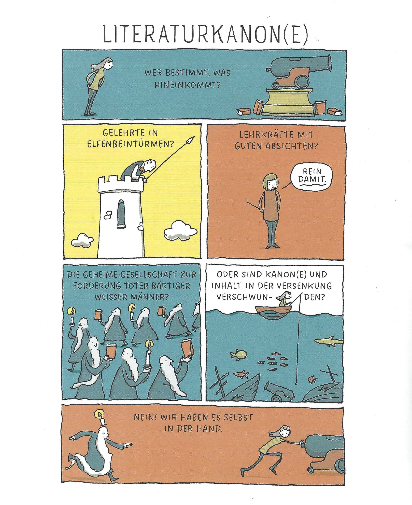
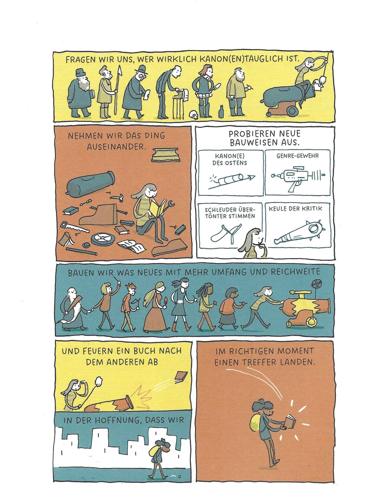

2. Was bedeutet Kanon? (15')
In dieser Lerneinheit erfahren Sie, was der Begriff «Kanon» bedeutet und weshalb die Diskussion um den Kanon hitzige Debatten auslösen kann.
Wagen wir eine Begriffsbestimmung: Der Kanon setzt sich aus Klassikern zusammen. Klassiker sind Werke, die zum Standardrepertoire an Schulen und Universitäten gehören. Es sind Werke, von denen wir annehmen, dass sie viele kennen, dass sie wichtig sind, dass sie gut sind. In diesem Kapitel schauen wir uns den bestehenden Kanon genauer an und gehen der Frage nach, gemäss welchen Kriterien der Kanon entstanden ist und welche Kriterien wir selbst als wichtig erachten.


Aus: Grant Snider. «Dein Bücherregal verrät dich», 2021. S. 46f.
Auch in der Forschung gehen die Meinungen über die Definition von Kanon auseinander. Das
Spektrum der Meinungen reicht von: Es gibt einen Kanon, ob man das will oder nicht, er ist empirisch
nachweisbar durch die Lektürepraxis beispielsweise in Schulen und an Universitäten, bis: Es
gibt keinen verbindlichen Kanon und es kann in unserer pluralen Gesellschaft auch keinen geben, weil
kein Bildungsbürgertum und damit kein Konsens über Lektüre mehr existiert. Jeder liest,
was er möchte. (Neuhaus 2017, 194)
Schecks Kanon
Einer, der sich beruflich mit der Kanonfrage und literarischen Kriterien auseinandersetzt, ist Denis Scheck. Ihn haben wir bereits im ersten Kapitel kennengelernt. Mit seinen Überlegungen zur Kanonfrage aus seinem Sachbuch «Schecks Kanon» von 2019 möchten wir uns im folgenden Abschnitt befassen.
Der Kanon in der Schule
In der schulischen Bildung gibt es einen spezifischen Kanon, der aus Texten besteht, die dem Alter angepasst sind und zur Förderung des kritischen Denkens ausgewählt wurden. Dieser Schulkanon unterscheidet sich oft von dem, was Studierende an Universitäten besprechen, wo ein breiterer Kanon mit komplexeren Ideen und Theorien behandelt wird.
Die folgende Literaturliste sammelt Werke aus unterschiedlichen Epochen, die für Maturand:innen als wertvoll angesehen werden, die eine eidgenössische Matura absolvieren wollen.
Verschiedene Institutionen, wie Schulen oder Universitäten, beziehen sich auf einen anderen Kanon, da sich die Zwecke voneinander unterscheiden und das Zielpublikum ein anderes ist, zum Beispiel ein Kanon der mundartsprachlichen Literatur oder der Jugendliteratur.
Auch ausserhalb der Literatur entstehen (ungeschriebene) Kanons, wie zum Beispiel im Bereich Film. Jeder dieser Kanons hat seine eigene Relevanz und spiegelt spezifische kulturelle und soziale Kontexte wider.
Daher sollten wir uns fragen: Für wen ist dieser Kanon relevant? Erfüllt er seinen Zweck? Fehlen wertvolle Werke?
Reflexion